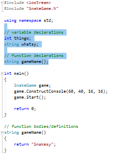
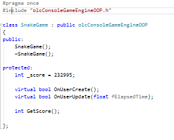
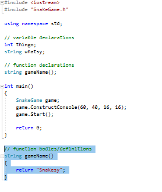
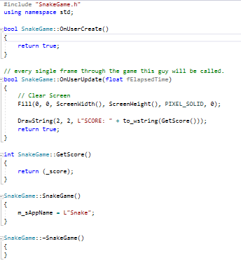

Recapping last week, taking it further. Making games with the game loop.
Grab this: olc and termcolor include files
Doesn’t exist yet: week 9 code html
Some missed last week due to maniac at redfern, also objects are so important it’s worth a little refresh.
Objects are a way of wrapping up loads of specialised stuff in an easy to use package, just like a car or an iphone. Then we stick big steering wheel and gear stick, or touch screen and home button in your face.
In our c++ programs we already use objects. They’re just data types that offer functions: you’ve seen it on string and vector.
#include <iostream> #include <string> #include "termcolor.h" using namespace std; using namespace termcolor; // constants that will be handy. const int LONG_NAME = 15; const int REALLY_LONG_NAME = 22; // Declare functions string commentOnNameLength(string aName); int main() { string name = "Aleksandrianakova"; cout << yellow << "My name is " << name << endl << endl; cout << white << commentOnNameLength(name) << endl << endl; name = "Aleksandrianakovaskayavic"; cout << yellow << "My name is " << name << endl << endl; cout << white << commentOnNameLength(name) << endl << endl; cout << termcolor::reset; return 0; } string commentOnNameLength(string aName) { // We're going to call 3 member functions of string objects. // if you can type `myVariable.` and a list of variables and functions appears, // you have an object. string comment = "Oh."; if (aName.size() > LONG_NAME) { if (aName.size() > REALLY_LONG_NAME) { comment = "I am ded."; } else { comment = "That whole thing's your name huh? I'm going to call you "; comment.append(aName.substr(0, 5)); // grab first letters of name } } return (comment); }
Looking at that code we can see the user isn’t a human driver or phone user, it’s our code. A line of our main function or getValidBet function is the user.
The easy to use package (interface) isn’t a touch screen or button, it’s a
push_back()function to add new data to our vector,or alength()function telling us how many characters our string has.
At it’s most basic an object happened between our includes area and our main function. Separating it out was mostly pulling that zone out into two files (h, cpp) and then using #include, exactly like we do with string and vector objects.
Teaching games programming last year started with the gameloop, but I want to talk about something more fundamental first. A loop is an implementation thing. But what are we impleenting? What is a game?
It’s a simulation. Not just the ones with sim in the name, like Sim City and the Sims.
GTA: Day to day crook life sim.
Doom: Escape from sci fi hell with guns sim.
Portal: Escape from AI captivity with a portal maker sim.
Fifa: Football sim.
We are simulating a snake, and the fruit it will eat, and the world she moves in.
The last stage of a game running is drawing to the screen. The temptation is to start trying to draw things right away. First though, we need user input, then things happen in our simulation, finally we draw the outcomes to the screen.
A game is built like a scientist builds a computer model of weather or a microbe community in a computer. That means organising the data/objects that represent real world things and then changing them over time.
A simulation is stored data being changed by code, over time.
Our model is different to a scientists.
Game input (via controller) is present throughout the whole game, putting our player into the sim as a constant affecting force. The rest of the sim, yeah that runs like a sciency one.
The game loop, very simplified, is this:
program myGame
initialise game.
while game isn't over
handleInput
simulate everything else
draw it all on screen
loop
end program myGame
Here’s more detail about those stages
while game isn't over
Input:
listen to input (maybe e key or x button) and do player things
(like step forward or press accelerator)
All other things:
do all npc actions, physics etc. register hits, take hitpoints, do a bit of mining etc.
Assess game status (game over, still going, level finished)
Output:
draw to screen, play sounds, vibrate controller
loop
Here’s a bodge of how it would look in code
int main() { bool gameOver = false; while (!gameOver) // not game over { // input and player simulation doPlayerInputThings(); // update non-player simulation updateAllUpdateableThings(); // move, grow, spawn, brew, mine etc checkForInteractions(); // collisions, traps, pickups, level exit etc setNewGameStateIfChanged(); // drawGraphics(); playSounds(); } }
We will introduce basic inheritance today. We’ll hit it more next week, but first we need to understand it to use olcConsoleGameEngine.
Olc is an “is a” relationship.
So in a Tower Defense game, for example, a FireballTower is a Tower.
#include "Tower.h" #include "FireballTower.h" class FireballTower : Tower { // Fireball tower things. }
To use olcConsoleGameEngine we will need to code inside a class, which is a bit different to our main.cpp. It can be disorienting if you don’t know your way around a class.
We’ll be coding from week9_code.html
Here’s were we have put our global variables and function declarations in main.cpp

Here I’ve moved them to the class’ .h file, SnakeGame.h:

Here’s where you put your full function definitions in a main.cpp, below main:

And here’s where they’d go in OO, the class’ cpp file:
